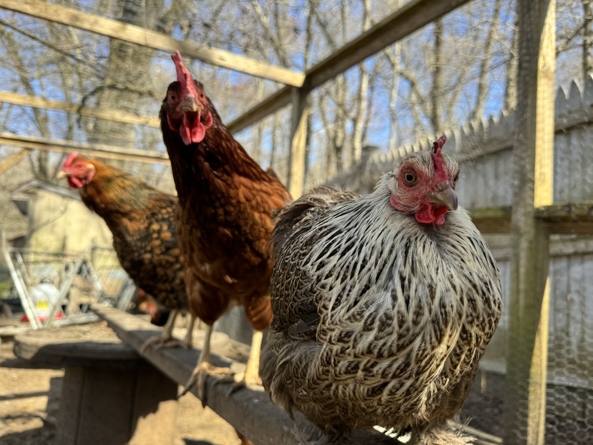

This is Colton. He is a Colchin rooster that loves his flock and human family. He loves cuddles, and is very loud 24/7.
More Info
Not all of our chickens have names. However, the hen staring into the camera is named Licorice.
Our chickens love to perch on this wooden board set up here.
Benefits Of Owning Pet Chickens!
Having pet chickens can have major benefits. They are fun, loving, and do positive things for the environment.
Benefits Of Chickens
One main one being for their eggs. Rasing chickens that produce eggs can save you money since you wont have to buy eggs at the the grocery store. Eggs can also become fertilized to increase your flock population; or you can hatch chicks to sell locally in your area for some extra cash.
Another benefit to owning pet chickens is to let them free range in your yard. Everyones backyard is filled with bugs, parasistes, weeds, and tall grass that you dont feel like cutting. Chickens have strong immune systems that can ingest bugs and parasites, being their number one source of protien. Chickens also love eating grass and weeds which is a good source of nutrience for them. Having chickens as grass eaters can save you time and energy so you wont have to cut your lawn and dig out weeds.
The Third benefit to owning pet chickens is to treat them like actual indoor pets. About half of people actually take their chickens into the house, which makes them appear like a pet cat or dog (two major indoor pets). The internet sells diapers for chickens to wear, since they are very big poopers. That way, you can have your pet chicken roam free in your house without them making a big mess.
The other half of people keep their chickens in a coop outside like me. I go outside to just hang out with them and give them hugs. Some chickens can learn to be calm and be picked up with no reaction at a young age. Most chickens aren't given that much love, which ends up making them skiddish and shy to the point where it is impossible to try to pick them up.
Tips For Getting Started With Owning Chickens!
You must have space on your property for a proper size coop. Make sure to fill the coop with hay and perches for them to relax on. When you get your chicks, make sure they are in your house in a cage with heating lamps, hay, and really fine chick feed; we have lost chicks due to the large pieces of chicken feed that they could not swallow.
The safety in chickens is one of the most important things to keep track of. Tractor supply and other pet store can give you advice on the correct medications and viatamins to buy. For vitamins, buy some grounded up calcium to put in their food for nutrients and preventing them from being egg bound from calcium deficiency. Most importantly, be sure to give those chicks a lot of love and care. It will show once they are grown up! If you decide to keep your chicken or chickens as pets indoors, you can find chicken diapers on Amazon.com.